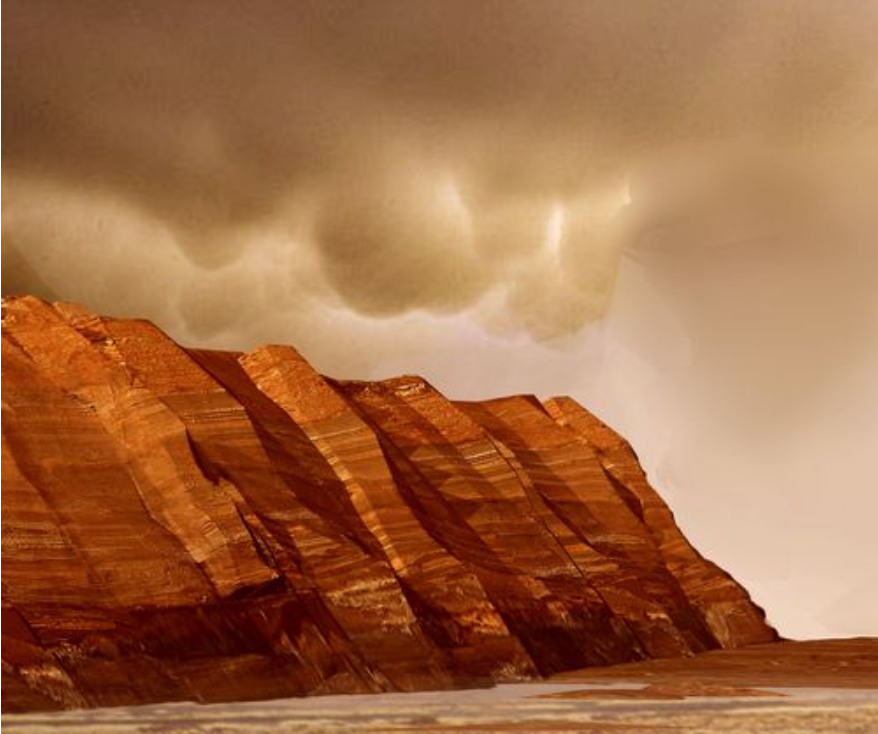
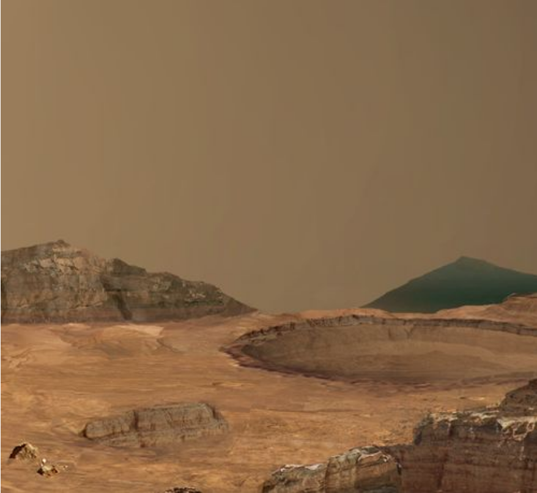
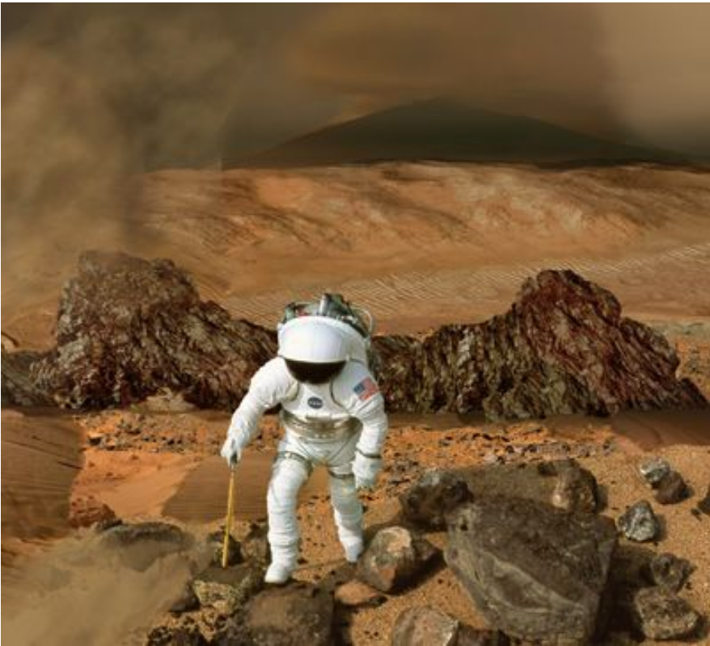

Mars Rover 2020:
Mission
Pour le Mars Rover 2020, il y a plusieurs buts pour sa mission. Voici quelques informations à propos de cette mission:
- Nom de la mission: Mars 2020.
- Durée: une année martienne (687 jours sur Terre).
Passer le souris au-dessus des images pour lire à propos des 4 buts principaux:

1. Trouver une indication de l'ancienne vie microbienne:
Le rover va étudier la surface sur Mars pour trouver des roches qui auraient pu soutenir la vie microbienne.

2. Caractériser le climat:
Les instruments du rover vont essayer de trouver des anciens environnements habitables pour la vie microbienne.
Aussi, le rover va rassembler des informations à propos du climat martien pour la prévision dans l'avenir.

3. Caractériser la géologie:
Le rover va inspecter les couches rocheuses de la surface sur Mars
pour trouver une indication des roches formées en eau et qui préservent des indications de la vie.

4. Préparer pour des humains:
Le rover va tester des instruments qui fonctionnent aux ressources martiennes et essaient de produire de l'oxygène.